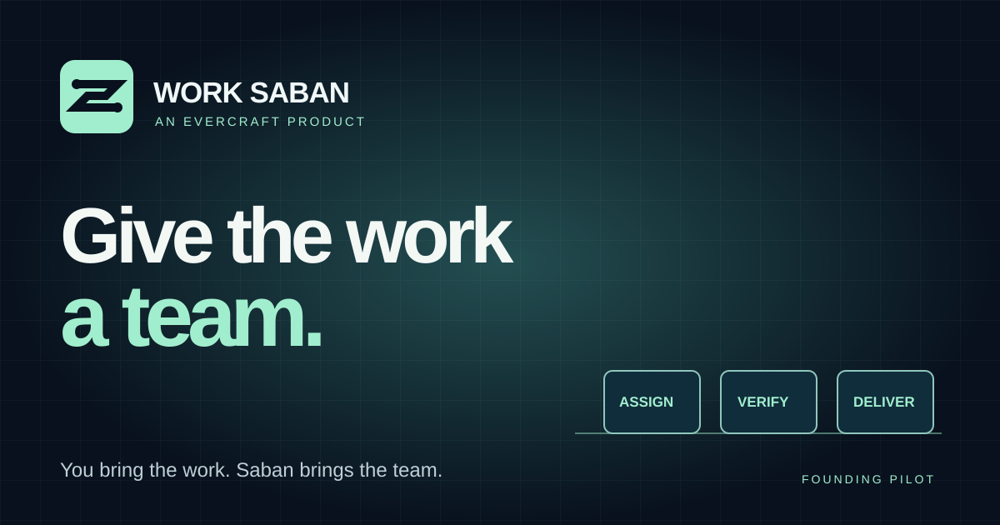

Work deserves
a team.
Work Saban is an Evercraft product built around orchestration, transparent execution, and reviewed outcomes. The identity feels decisive, technical, trustworthy and human-centered, not a mysterious chatbot in a glowing box.

The routed S.
Two anchor points and one deliberate route. The mark represents a task entering the system, moving through coordinated work, and leaving as an accountable result. Its shape is a proprietary design direction, not a certification of registered trademark or exclusivity.
Work Saban wordmark + routed S. Evercraft endorsement may sit beneath or after it.
Use the SVG, avoid stretching, busy backdrops, or more than two accent colors.
Use a visible 'local proof', 'synthetic example', or 'future concept' qualifier whenever product motion is not real customer execution.
Built for long missions.
#08111D
Primary canvas
#A1EECE
Readiness and action
#7199F8
Technology and navigation
#EDF6F7
Headlines and clarity
Typography: an assertive geometric grotesk for headlines and a legible system sans for UI. Use native system fonts until any commercial web-font licensing is approved. Headlines are crisp; data and receipts remain unambiguous.
A complete product story
in one frame.


These are editable source vectors. Social networks may require a PNG or JPEG conversion before posting. Do not imply this campaign has been published or that the product is commercially available.
Direct. Confident.
Accountable.
Give the work a team.
Master promiseYou bring the work. Saban brings the team.
Founding invitationYour next reporting task could have its own specialist team. Apply for the private Work Saban pilot.
Real local reporting execution. A work floor driven by recorded worker events. Independently checked arithmetic and verifiable local report digests.
Do not say thisSix autonomous AI employees, connected to every app, accepting all tasks, live globally, secure enterprise cloud, customer revenue, or proven customer results without independent supporting evidence.
From one product to a recognizable family.
Launch assets should use the same mark, palette, human-first product copy, interface specimens, packaging, original commercial music and branded voice direction. Customer operations remain under Evercraft and Systemia governance.